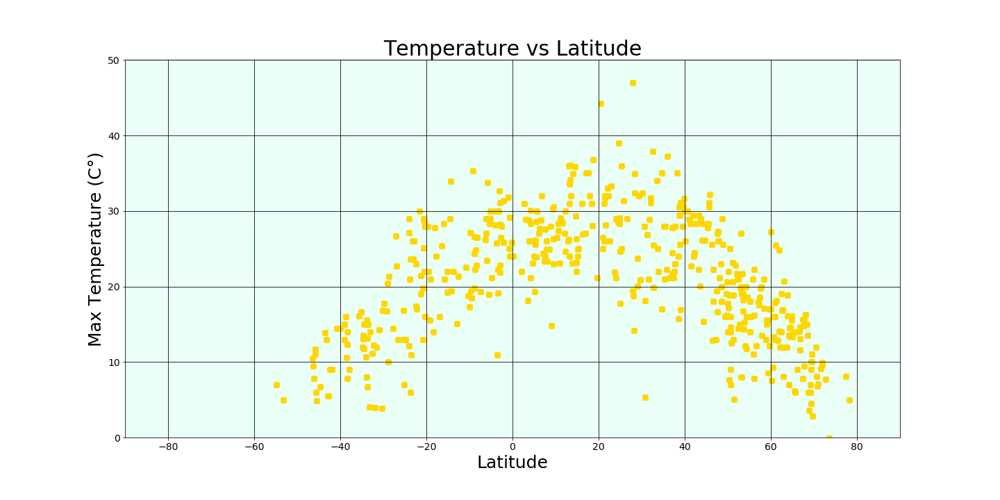

Temperature

We see that there's not a linear relationship between Latitude and Temperature, the further from the Equator, the smaller the temperature. We see the maximum temperatures betwteen 0' and 40'. As well, we see that in the left side of the 0, there are less points than in the right side..